FauxClock
Kernel-level performance tuning for rooted Android
v1.0.30 · Requires root (Magisk / KernelSU / APatch)
Know your device inside out
Live battery drain tracking with day-over-day comparison, screen-on-time estimates, thermal headroom monitoring with throttle event counting, and CPU load history. All metrics graphed over time so you can see the impact of every tweak.
- Battery drain rate with historical sparkline
- Peak temperature headroom percentage
- Throttle event counter
- Community Benchmarks: compare your config against other users
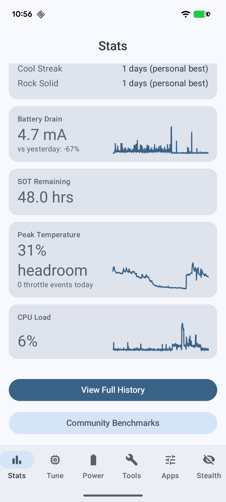
Full kernel control surface
Access every tunable your kernel exposes: CPU frequency limits, GPU governor, VM/memory settings, I/O schedulers, and a capability matrix showing exactly which APIs your device supports. Thread Inspector lets you watch live thread placement.
- Per-cluster CPU frequency and governor
- GPU frequency caps (Mali/Adreno)
- Memory, KSM, and I/O scheduler
- Kernel capability matrix
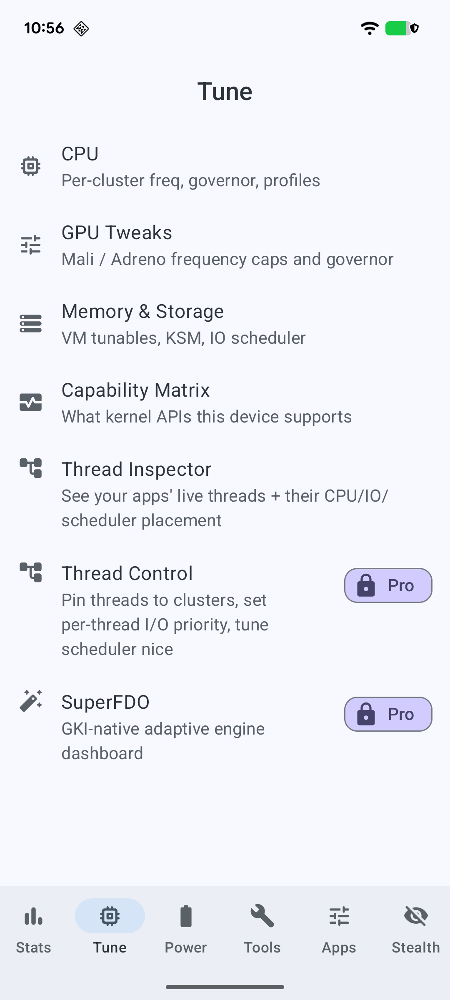
Per-cluster precision
See every CPU cluster, its core count, current frequency, and active governor at a glance. Switch between Battery, Balanced, and Responsive performance profiles, or go advanced for manual frequency and governor control per cluster.
- Cluster topology with live frequency readout
- One-tap performance profiles with recommendations
- Per-cluster governor selection (schedutil, performance, etc.)
- Advanced mode for manual min/max frequency tuning
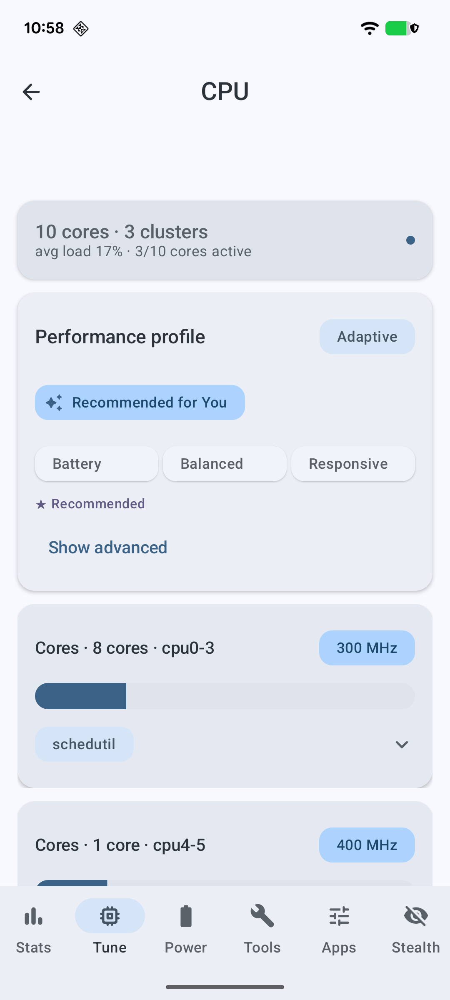
Extend battery lifespan
Full battery health dashboard: design capacity tracking, cycle count, live temperature, and current draw. Set a charge limit (50-100%) to stop charging at your target level. Choose between Default, Adaptive, and Longlife charging policies.
- Battery health grade with capacity percentage
- Charge limit slider (stops charging at target)
- Cycle count with optional reset
- Adaptive and Longlife charging policies
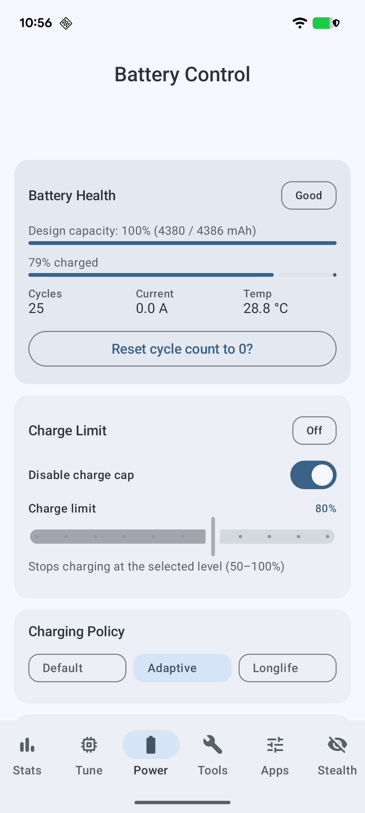
App-level customization
Per-app performance profiles let you bias individual apps toward performance or power saving. Vision Bias gives you per-app color control: adjust saturation, warmth, and grayscale. Haptic Panel tunes your device's vibration motor at the vendor driver level.
- Per-App Profiles: bias apps toward perf or battery
- Vision Bias: saturation, warmth, grayscale per app
- Haptic Panel: per-vendor brake, tail, compensation tuning
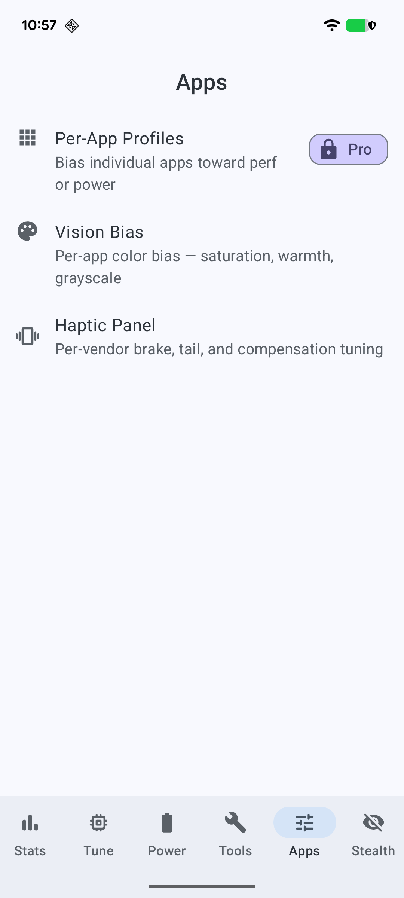
Root without compromise
Banking Mode orchestrates your full root-hiding stack in one place: KernelSU umount, TrickyStore, keybox management, and integrity checking. See what root-detection libraries actually flag on your device and fix it before your bank does.
- Banking Mode: one-stop root-hiding orchestration
- Identity: TrickyStore and keybox management
- WebUI X Modules: KernelSU/Magisk/APatch module configs
- Integrity probe: see what detection libraries flag
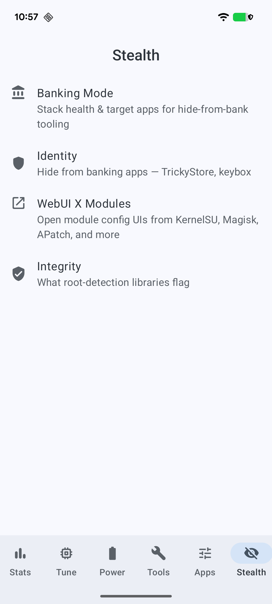
Every module, one dashboard
FauxClock scans your KernelSU, Magisk, or APatch module directory and presents every installed module with version, author, description, and enable/disable controls. Modules are auto-categorized into Security, Performance, and System groups. Conflict detection warns when modules overlap (e.g., dual Zygisk implementations).
- Auto-discovery: KernelSU + Magisk + APatch modules
- Categorized: Security, Performance, System groups
- Enable/disable modules without rebooting into manager
- Conflict detection for overlapping modules
- One-tap Configure opens WebUI X for modules that ship a web interface
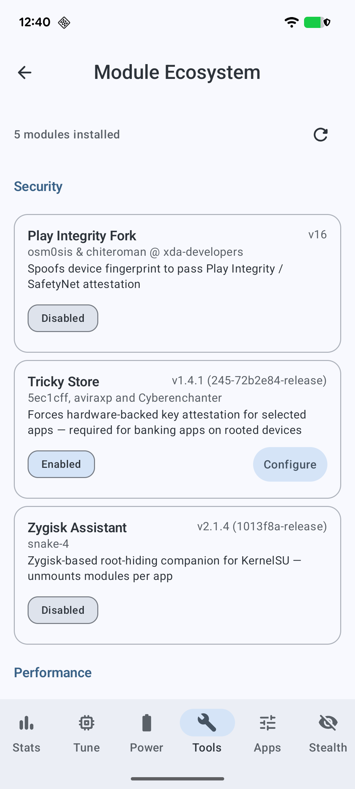
Module configuration, built in
Many KernelSU and Magisk modules ship their own web-based configuration pages. FauxClock renders these inline through WebUI X, so you never leave the app. Tricky Store's app attestation list, Play Integrity Fix's fingerprint editor, and any module with a webroot directory all load directly inside FauxClock's native chrome.
- Renders module web interfaces inline (no browser needed)
- Auto-discovers modules with webroot directories
- Full save/apply support for module configs
- Works with Tricky Store, PIF, and any WebUI-enabled module
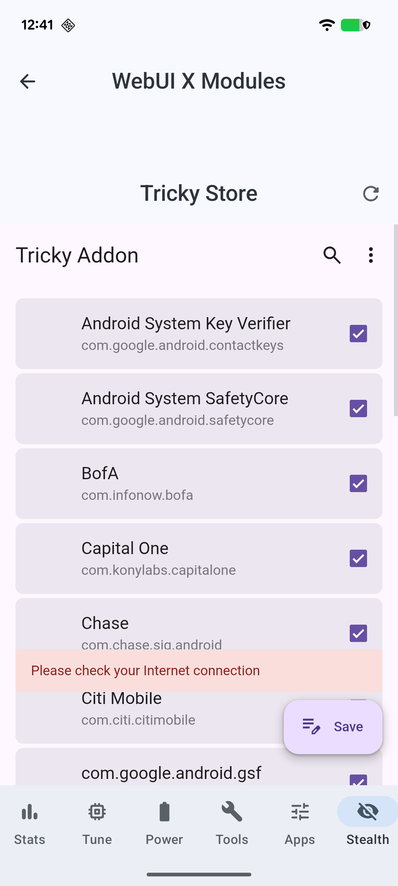
Everything at a glance
Detailed device information: Android version, SoC, kernel version, build fingerprint, and uptime. Kernel flashing lets you apply AnyKernel3 zips directly through the app. Network tuning covers TCP congestion control, queueing disciplines, and buffer sizes.
- Device info: SoC, kernel, build, uptime
- AnyKernel3 kernel flashing via root manager
- TCP congestion control and network tuning
- FauxClock Pro license activation
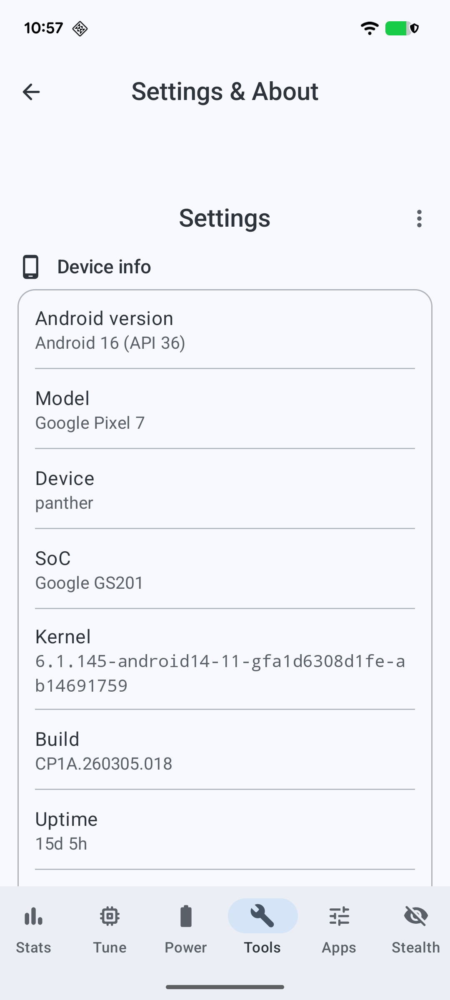
FauxClock Pro
Advanced performance features for power users. Activate with a license key at Settings → FauxClock Pro.
Adaptive, sensor-driven scheduling
SuperFDO goes beyond static CPU tweaks. It classifies your workload in real time (IDLE, LIGHT, MODERATE, HEAVY), applies per-SoC preset catalogs tuned to your OEM silicon, and gates uclamp floors against live thermal headroom so the scheduler backs off before you throttle.
- Real-time workload classification with efficiency scoring
- Per-SoC preset catalog (Tensor G2, Snapdragon, Exynos, etc.)
- ADPF integration: uclamp_min floor gated on thermal state
- Per-cluster frequency caps with live thermal headroom readout
- Foreground hint for interactive response tuning
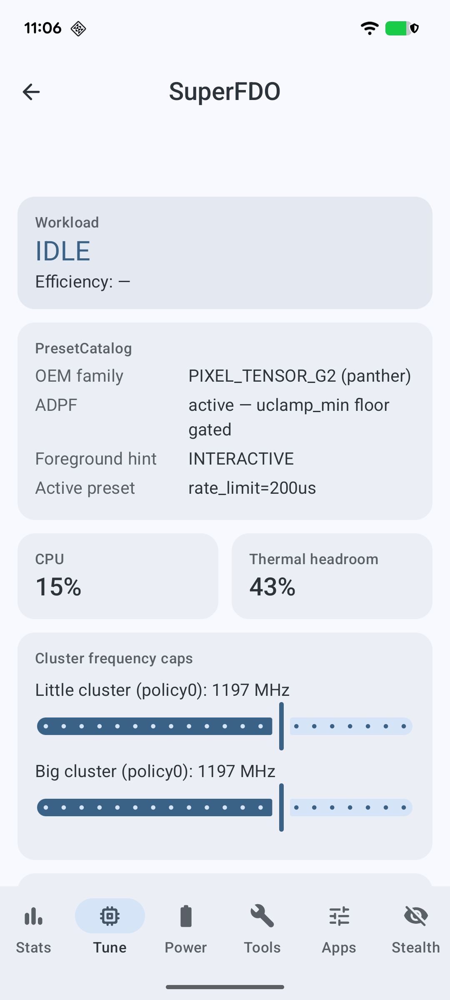
Pin threads where they belong
Thread Control gives you per-TID control over cluster affinity (sched_setaffinity), I/O priority (ionice), and nice values (renice). Pick any running app and see its threads, then pin performance-critical threads to big cores and demote background work to efficiency cores. No shell commands required.
- Per-thread cluster pinning via sched_setaffinity
- I/O priority control (ionice class and level)
- Nice value adjustment per thread
- Live thread list for any running process
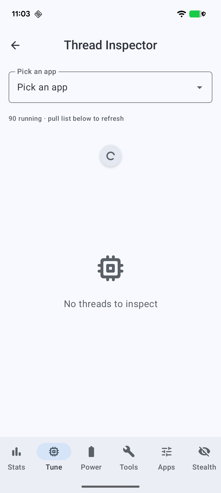
Thread-level performance floors
Per-App Uclamp uses sched_setattr to set minimum performance floors on individual threads. Unlike system-wide boosting, this targets only the threads that matter: your game's render thread, your camera's ISP pipeline, or your DAW's audio callback. No JSON configs, no adb shell.
- Per-TID sched_setattr with in-app GUI
- Pin uclamp_min floors to specific threads
- Surgical: boost what matters, leave the rest efficient
- Thread-level granularity no other Android tool offers
See how your config stacks up
Opt-in anonymous telemetry aggregates drain rates, governor choices, scheduler picks, and TCP settings across all FauxClock users on your device family. See your drain vs. the community average, find out where you rank, and discover what the top performers are running.
- Your drain rate vs. community average (mA/hr)
- Percentile ranking ("You're in the top 36%")
- Most Popular Settings: governor, scheduler adoption rates
- Top Performers: what the lowest-drain users run
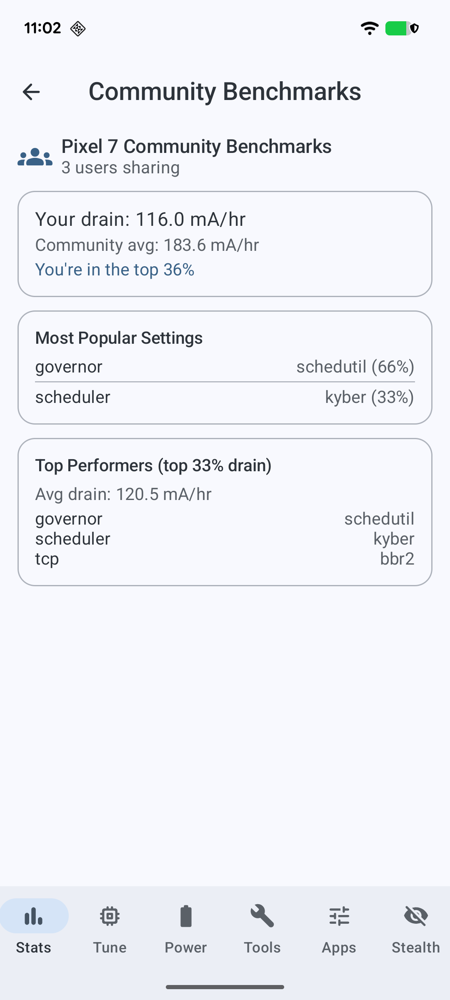
Get FauxClock
Requirements
- Android 8.0+ (API 26)
- Root access (Magisk, KernelSU, or APatch)
- Busybox